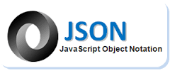
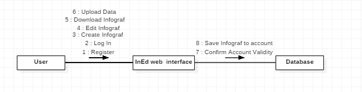

Infographics Web Editors
- Bogdan-Andrei Latu
- Ene-Eliza Lorena
- Emilian Onofras
Cuprins:
Descriere
Proiectul are ca scop dezvoltarea unui editor web de infografice . Utilizatorul va putea folosi un set predefinit de elemente de redare a datelor (e.g., grafice diferite, liste de prezentare, alte componente vizuale etc.) pentru a crea model sugestiv al datelor incarcate de acesta . Proiectele pot fi private sau pot fi publice .
Sursele de date pe baza cărora se va realiza infograficul vor putea fi importate din fişiere locale (în formatele CSV şi JSON), pe baza unui URL . Infograficele create vor putea fi exportate ca imagini PNG şi ilustraţii SVG.
Actionari/Interese
Creator: pune la dispozitia utilizatorilor o platforma specializata in ilustrarea concisa si sugestiva a unor cantiati mari de date, asigurand in acelasi timp existenta acestei reprezentari intr-un format usor de distribuit
Utilizatorii : obtine o reprezentare eleganta a datelor, care poate ajuta la evidentierea rapida a unor trenduri care reies din datele culese
Scenarii de utilizare
Utilizatorul isi creaza un cont
Obiectiv
Utilizatorul obtine un cont prin care poate accesa functionalitatile platformei .
Pasi
Utilizatorul apasa butonul "Sign up" prezent pe pagina menu , accesibila prin apasarea butonului cu aceeasi denumire din dreapta sus sau prin utilizarea "scroll-ului" pentru a parcurge subcomponentele paginii principale pana la meniu. Isi alege un nume de utilizator valid , o parola care este in conformitate cu standardele minime pentru securitate . Furnizeaza un email valid. Apasa butonul create si schimba datele corespunzatoare , in eventualitatea in care nu sunt acceptate. Alternativ poate folosi contul propriu de facebook pentru a crea rapid contul pentru InEd
Extensii
Utilizatorul uita parola , datorita lipsei unui sistem de recuperare a parolei acesta trebuie sa contacteze administatorii sitului.
Utilizatorul creaza un infograf
Obiectiv
Crearea unui infograf.
Pasi
Utilizatorul (dupa logare ) apasa butonul "Editor" , ultimul buton din cadrul meniului (din stanga sus). Selecteaza un template in cazul in care are un format similar cu cel dorit . In absenta unui template satisfacator utiliztorul poate sa creeze o pagina libera , unde pot fi adaugate oricare din tipurile de grafuri care vor ilustra datele incarcate de utilizator.
Extensii
In cazul in care utilizatorul nu incarca datele intr-un format corespunzator graficele nu vor putea fi generate
Utilizatoul descarca infograficul dorit
Obiectiv
Obtinerea infograficelor pe masina proprie intr-un format usor transferabil.
Pasi
Utilizatorul (dupa logare) apasa pe butonul aflat in dreapta sus . Dupa aparitia tabelului care contine toate infograficele ca ii apartin, il gaseste in lista pe cel dorit si apasa butonul din dreapta acelui infograf pentru salvarea datelor colectate . Alege fomatul dorit si apasa save.
Extensii
In cazul in care utilizatorul doreste o versiune precedenta a fisierului, el va trebui manual sa recreeze infograficul dorit (nu este prezent un sistem de versionare)
Tehnologii Folosite
In cadrule acestei aplicatii vom folosii urmatoarele tehnologii:
- HTML5,CSS3,CSV,JSON: pentru partea de front-end care va oferii o interfata prietenoasa utilizatorului;
- D3.JS pentru trasarea componentelor grafice;
CSV
Acesta este un format de fisier care ne va ajuta sa salvam datele intr-un tabel structurat sau pentru a face schimb de date între aplicații similare în mod diferit .
JSON
Cu ajutorul acestu format vom realiza interschimb intre date. Este un format text, inteligibil pentru oameni, utilizat pentru reprezentarea obiectelor și a altor structuri de date și este folosit în special pentru a transmite date structurate prin rețea, procesul purtând numele de serializare. Eleganța formatului JSON provine din faptul că este un subset al limbajului JavaScript (ECMA-262 3rd Edition) , fiind utilizat alături de acest limbaj.
D3.js
Acesta este o librarie pentru producerea dinamica a vizualizarilor interactive in cadrul unui browser web.Se foloseste de raspanditele standarde SVG ,HTML5 si CSS.
MySql
Este o baza de date relationala open-source.Parserul lui sql este scris in yacc ,dar are analizorul lexical dezvoltat in-house
Github
GitHub este un serviciu de găzduire web pentru proiecte de dezvoltare a software-ului care utilizează sistemul de control al versiunilor Git.
Structura Site-ului
Pentru navigarea si intelegera interactiunilor in mod optim se pot consulta urmatoarele diagrame
1.Use Case
2.Sequence Diagram
3.Communications Diagram

4.StateDiagram
Bibliografie
- Link: https://d3js.org/
- Link: https://www.analyticsvidhya.com/
- Link: https://infogram.com
- Link: http://www.w3schools.com/